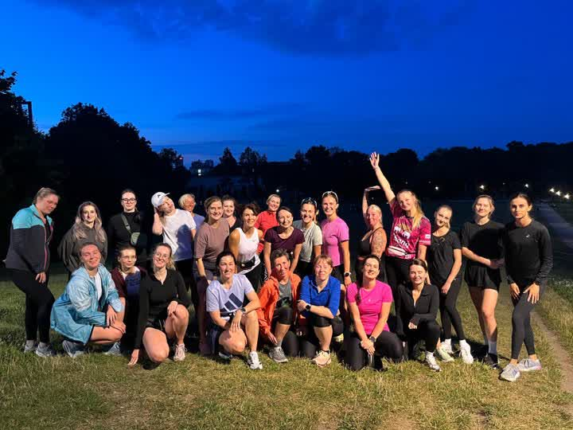

{{POST_TITLE}}
W Parku Jordana odbył się otwarty trening biegowy dla kobiet – wyjątkowe spotkanie pełne ruchu, energii i dobrej atmosfery. To grupa otwarta dla kobiet na różnym poziomie zaawansowania: zarówno dla tych, które dopiero zaczynają przygodę z bieganiem, jak i dla bardziej doświadczonych biegaczek.

Trening rozpoczęłyśmy jeszcze za dnia, w pięknym otoczeniu parku, a kończyłyśmy już w lekkiej ciemności, co dodało całemu spotkaniu wyjątkowego klimatu. Był czas na rozgrzewkę, część biegową oraz wspólne ćwiczenia – wszystko w kobiecym, wspierającym gronie.
Cieszymy się, że mogłyśmy spotkać się w tak inspirującym miejscu i stworzyć przestrzeń, w której każda kobieta może biegać w swoim tempie, bez presji, za to z ogromną dawką motywacji.
Zapraszamy na kolejne treningi, które odbywają się o stałej porze – więcej informacji znajdziesz w ofercie. Dołącz do nas i przekonaj się, że bieganie w grupie daje jeszcze więcej radości! Skontaktuj się z nami.